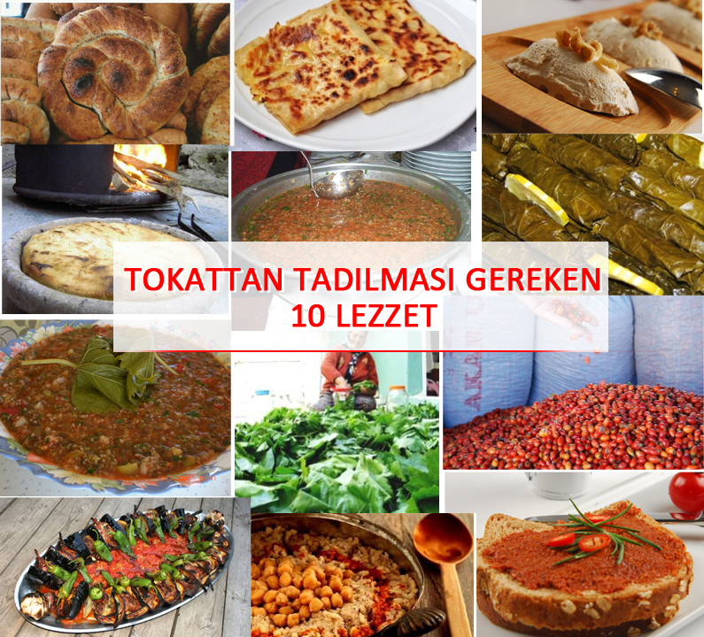

Cevizsiz olmaz: Tokat pağacı
İçine ceviz eklendiği sert kıvamlı bir hamur fırınla buluşuyor. Normal ekmekten biraz daha sert olması en temel özelliği. Genellikle üzerine tereyağı ve bal sürülerek yenilir. Tokat köylerinde kahvaltıların vazgeçilmezdir.
Çayından reçeline: Kuşburnu
Tokatlıların çok sevdiği hatta belki de güzellik sırları bile diyebileceğimiz bir bitkidir kuşburnu. Pekmezi de bolca tüketilir. Bol c vitamini içeren kuşburnu genellikle çay olarak içilir ama Tokatlılar ekmek üzerine sürerek kahvaltılarda yer.
Bir nevi kısır: Bat
Bat, Tokat mutfağının en ünlü yemeklerinden birisidir. Bulgurun ıslatılarak tokat baklası, salça ve bol su eklenmesiyle yapılır. Hatta bu yemek ile ilgili Tokat'ın Pazar ilçesinde “Bat mı yedin de güzelleştin?” diye de bir söylem mevcuttur.
Lezzet ve vitamin bir arada: Bakla dolması
İç baklayla hazırlanan harika bir yemektir kendisi. Kemikli etlerin tencere dibine dizilmesi önemli bir ayrıntıdır. Altın günlerinin olmazsa olmazıdır.
Doyurucudur: Tokat keşkeği
Tokat mutfağında keşkeğin özel bir yeri vardır. Hatta valiler özel günlerde Tokat’ın meşhur Ali Paşa Hamamı'nda keşkekli kutlaması yaparlar. Keşkek bütün dana etinin hafif ateşte bulgur ile kaynatılarak daha sonra fırına verilmesi ile olur ve özellikle Tokat’a gelen misafirlere keşkek ikramı yaygındır.
Küçük bir not daha buraya: "En güzel Tokat keşkeği bende var" diyenler yollayıverin fotoğrafını bir zahmet çünkü internette güzeline rastlayamadık da biz
Gözlemenin en lezzetli hali: Tokat çökeliklisi
Odun kömüründe yanan saç üzerinde yapılan ve arasına Tokat çökeliklisi diye adlandırılan peynir çeşidi konan gözlemeler çayların vazgeçilmez ikilisidir.
Gelsin çörekler: Niksar cevizi
Orhan Pamuk'un Kar adlı romanında adı geçen ceviz ve bu cevizle yapılmış çörekler tam olarak da Tokat'ın niksar cevizinden söz etmektedir. Daha da başka bir şey demeye gerek yok herhalde
Bahsi geçmişken: Niksar çöreği
Cevizli çöreğiyle meşhur Niksar çöreğinin orijinal haline internette rastlayamadık arkadaşlar. Aranızda yapan, yaptıran olursa bir zahmet.
Hastalık unutturur: Zile pekmezi
Zile ilçesinde yapılan ve kendine haz üretimi ile beyaz renkli bir yiyecektir ve bol vitamin deposu olmasından dolayı da masalardan eksik olmaz. Aynı zamanda Zile pekmezinin tam 30 farklı ülkeye aktif olarak satışı bulunmaktadır.
Sivas'ın da gözdesi: Tokat kebabı
Patlıcanların, kemikli kuzu etinin ya da köftenin harika kebabına özel domatesli sos eşlik eder. Görüntüsü ve malzemeleri Sivas kebabını da andırdığı için arada az da olsa tartışmalar çıkmıştır.
Ekstra kıymalı: Tokat çemeni
Mis gibi Tokat çemeni derler bu çemen için. Çünkü orijinalinde çemen yapılırken içine kıyma da katılırmış. Bol sarımsak, bol çemen. Yeme de yanında yat.